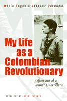

<body bgcolor="#FFFFFF" text="#000000" link="#0000FF" vlink="#CC0000" alink="#CC0000"><center><hr width="350" size="1" align="center" noshade>A gripping memoir of a woman who left middle-class life to become a member of a Colombian militant group<hr width="350" size="1" align="center" noshade><p><a href="https://cdcshoppingcart.uchicago.edu/Cart/ChicagoBook.aspx?ISBN=9781592131006&&PRESS=temple" target="_top">Buy this book!</a> | <a href="https://cdcshoppingcart.uchicago.edu/Cart/Cart.aspx?PRESS=temple" target="_top">View Cart</a> | <a href="https://cdcshoppingcart.uchicago.edu/Cart/Cart.aspx?PRESS=temple" target="_top">Check Out</a></p><p></p></center><!--none//--><h1>My Life as a Colombian Revolutionary</h1>
<H2>Reflections of a Former Guerrillera</H2>
<H2><!-- Translated by Lorena Terando and with an Introduction by Arthur Schmidt --></H2>
<h3>Mar�a Eugenia V�squez Perdomo, translated by Lorena Terando, introduction by Arthur Schmidt</h3>
<P>cloth 1-59213-100-X $80.50, Jan 05, <FONT COLOR=#990033>Available</FONT>
<br>paper 1-59213-101-8 $29.95, Jan 05, <FONT COLOR=#990033>Available</FONT>
<BR> 312 pp
6x9
22&nbsp;halftones
</P><BLOCKQUOTE><I>"</i>My Life as a Colombian Revolutionary<i> is a fascinating autobiography. V�squez Perdomo provides an extraordinary insider's account of Latin American youth culture, radical student politics of the 1960s and early 1970s, and the formation of the M-19 guerrilla movement. This is a lively, self-reflective, engaging and humane account of what it meant to be a woman revolutionary in those years. It is a unique, moving document."</i>
<br>&#151<b>Catherine LeGrand</b>, Department of History, McGill University<i></I></BLOCKQUOTE>
<p>In <i>My Life as a Colombian Revolutionary</i>, Mar�a Eugenia V�squez Perdomo presents a gripping account of her experiences as a member of M-19, one of the most successful guerrilla movements in Colombia's tumultuous modern history. V�squez's remarkable story opens with her happy childhood in a middle-class provincial household in which she was encouraged to be adventurous and inquisitive. As an eighteen-year-old university student in Bogot�, Mar�a Eugenia embraced radical politics and committed herself to militant action to rid her country of an abusive government.
<p>Dedicated and daring, V�squez took part in some of the M-19's boldest operations in the 1970s and 1980s and became one of its leaders. She was able to avoid detection for nearly twenty years in the movement because she was both clever and considered too attractive to be a <i>guerrillera</i>. Her vivid narrative brings to life the men and women who were her comrades and conveys their anxiety and exhilaration as they carried out their actions. When she tells of her love affairs with some of M-19's top leaders, she cannot separate romance from camaraderie or escape a sense of impending tragedy.
<p>If V�squez gave us only a rare insider's account of youth culture and a guerrilla movement in a Latin American country, this would be a book well worth reading. But she also gives us an unsparing analysis of what it meant to be a woman in the movement and how much her commitment to radical politics cost her.
<BR>&nbsp;<h2>Excerpt</h2><P>Excerpt available at <a href="http://www.temple.edu/tempress">www.temple.edu/tempress</a></p>
<BR>&nbsp;<h2>Reviews</h2>
<p><i>"</i>My Life as a Colombian Revolutionary<i> is a rare and compelling book. V�squez Perdomo recounts how a young, middle-class woman became a leader of the M-19, one of the most creative and successful of the Colombian guerrilla movements. She was personally involved in some of the M-19's most audacious actions, including the stealing of Bolivar's sword and the kidnapping of a score of ambassadors to Colombia. I cannot say enough about how successful V�squez Perdomo is in illuminating the frightfully complex personal and political issues she struggles with."</i>
<br>&#151<b>Charles Bergquist</b>, University of Washington, Seattle
<p><i>"With sweeping narration, the rebel leader recounts her near-death experiences and exhilarating love affairs as she participated in covert operations against the government, providing a fascinating look at what it was like to be a young feminist within a guerrilla movement."</i>
<br>&#151<b><i>Latina</i></b>
<p><i>"...gripping... V�squez Perdomo's work makes a significant contribution to a void in women's testimonial literature in Latin America, describing her personal experiences with the movement's activities so that the reader is moved and informed....the book adds to a collective understanding of Colombia's bloody history and women's position in it."</i>
<br>&#151<b><i>The Hispanic Outlook in Higher Education</i></b>
<p><i>"One of the principal strength of her account lies in the human face she gives to the M-19....The result is a highly readable account of the life and culture of the M-19 militants....Vasquez Perdomo's autobiography provides insights invaluable to that end."</i>
<br>&#151<b><i>Contemporary Sociology</i></b>
<p><i>"[A] must read for anyone who wishes to gain insight into why people are willing to risk their lives in a violent struggle against oppression."</i>
<br>&#151<b><i>Multicultual Review</i></b>
<p><i>"Maria Eugenia Vasquez-Perdomo�s ethnographic exorcism of the ghosts from her clandestine past, and her struggle to uncover the early experiences that shaped her decision to take up arms, are riveting. ... [T]he tone of this book is not solemn or maudlin, and it renders in realistic and compelling terms the appeal of abstract ideals and how these were transformed into concrete lived experience....The brief but exceedingly balanced and thoughtful introduction to modern Colombian history by Arthur Schmidt provides an excellent contextual framework for the account. Translator Lorena Terando has also done a commendable job of rendering difficult colloquial Spanish into a lively and well-paced narrative that retains the author�s sense of humor and personal voice." </i>
<br>&#151<b><i>Hispanic American Historical Review</i></b>
<p><i>"Maria Eugenia Vasquez Perdomo's memoir </i>My Life as a Colombian Revolutionary<i> is a page-turner. The descriptions of her childhood, her integration into political groups, her personal and romantic relationships, and her account of the M-19's military actions are all fascinating."</i>
<br>&#151<b><i>Canadian Review of Comparative Literature</i></b>
<BR>&nbsp;<h2>Contents</h2><P>
<p>Acknowledgments
<br>Introduction &#150 Arthur Schmidt
<br>Prologue: Memory, the Thread That Weaves Life
<br>1. Family Portrait
<br>2. Turmoil at the Nacional
<br>3. A Criolla Guerrilla
<br>4. The Alliance with ANAPO
<br>5. The Face Behind the Mask
<br>6. Operation Colombia: Weapons for the War
<br>7. We Risked It All
<br><i>Photograph gallery</i>
<br>8. An Army in Deep
<br>9. Bars on My Soul
<br>10. Singing to the Sun Like a Cricket
<br>11. Mortal Wounds
<br>12. Reinventing Life
<br>Epilogue
<br>Chronology of Major M-19 Actions
<br>Index
</P><BR>&nbsp;<H2>About the Author(s)</H2>
<P><b>Mar�a Eugenia V�squez Perdomo</b> is currently coordinating an NGO project in conjunction with a UN organization, which serves women forcibly displaced by the armed conflict. The Spanish-language version of this book, published as <I>Escrito para no morir: Bit�cora de una militancia</I>, was awarded the Colombian National Prize for Testimonial Literature in 1998.</P>
<P><b>Lorena Terando</b> is Assistant Professor of Translation at the University of Wisconsin, Milwaukee.</P>
<BR><H2>Subject Categories</H2>
<p><A HREF="/tempress/latin.html" TARGET="_top">Latin American/Caribbean Studies</a>
<BR><A HREF="/tempress/general.html" TARGET="_top">General Interest</a>
<BR><A HREF="/tempress/women.html" TARGET="_top">Women's Studies</a>
</p>
<BR><h2 class="inpageheading">In the series</H2>
<P><I><a href="http://www.temple.edu/tempress/voices.html" onMouseOver="window.status='Click for other books in this series!'; return true;" onMouseOut="window.status=''; return true;" target="_top">Voices of Latin American Life</a></i>, edited by Arthur Schmidt.
</p><p><I>Voices of Latin American Life</I>, edited by Arthur Schmidt, aims to bring the texture and humanity of Latin American experiences to English-language readers through translations of works that impart direct voices. Through testimonial literature, interviews, and essays, the series will present important Latin American views from the famous and the anonymous that reflect the immense challenges of fundamental issues and of daily life in the late twentieth and early twenty-first centuries.</p>
<p align="center"><a href="https://cdcshoppingcart.uchicago.edu/Cart/ChicagoBook.aspx?ISBN=9781592131006&&PRESS=temple" target="_top">Buy this book!</a> | <a href="https://cdcshoppingcart.uchicago.edu/Cart/Cart.aspx?PRESS=temple" target="_top">View Cart</a> | <a href="https://cdcshoppingcart.uchicago.edu/Cart/Cart.aspx?PRESS=temple" target="_top">Check Out</a></p><p><font face="Arial" size="1"><a href="copyright.html" onMouseOver="window.status='Web Copyright Policy';return true;" onMouseOut="window.status=''" title="Web Copyright Policy">&copy;</a> 2015 <a href="http://www.temple.edu" target="new" onMouseOver="window.status='Link to Temple University home page';return true;" onMouseOut="window.status=''" title="Link to Temple University home page">Temple University</a>. All Rights Reserved. http://www.temple.edu/tempress/titles/1756_reg.html</font></p>